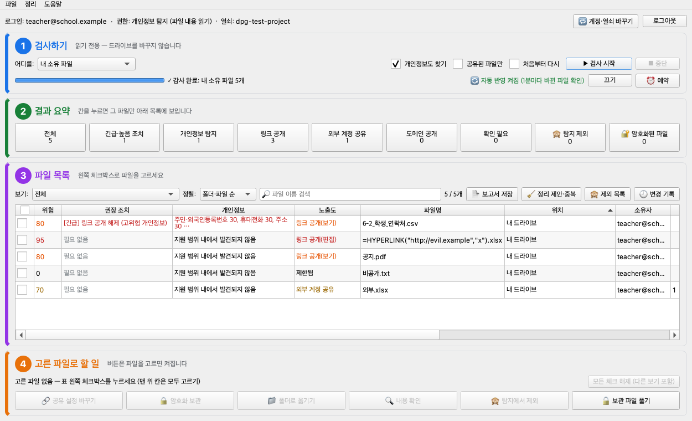
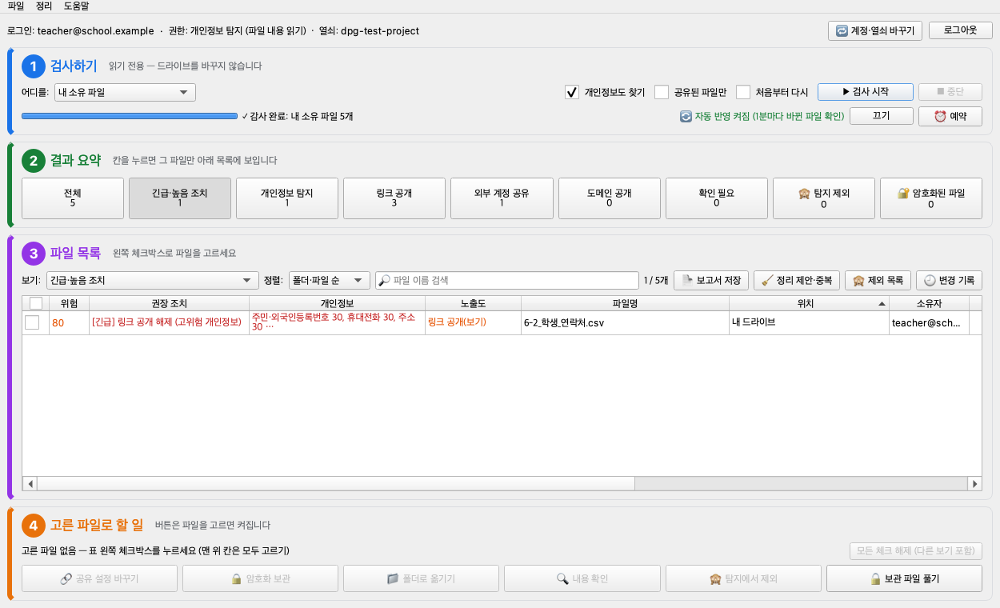
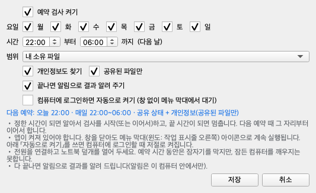

데스크톱 앱 사용법
Mac·Windows 앱은 내 드라이브 전체를 검사합니다. 화면은 위에서 아래로 ① 검사하기 → ② 결과 요약 → ③ 파일 목록 → ④ 고른 파일로 할 일 순서입니다.
처음이면 구글 설정부터검사는 읽기만 — 드라이브를 바꾸지 않음
-
검사하기

- 어디를: 「내 소유 파일」(전체) · 「링크로 공개된 내 파일만 (빠름)」 · 「나에게 공유된 파일」 · 「공유 드라이브」 · 「특정 폴더」
- 개인정보도 찾기를 체크하면 문서 내용에서 주민번호·연락처 등을 찾습니다. 파일이 많으면 공유된 파일만을 함께 체크하세요.
- ▶ 검사 시작. 두 번째부터는 바뀐 파일만 확인해 금방 끝납니다. 처음부터 하려면 「처음부터 다시」.
파일이 아주 많으면 먼저 「링크로 공개된 내 파일만」으로 몇 분 만에 가장 위험한 파일을 확인하세요. 전체 검사는 중단해도 다음에 이어서 합니다.
-
결과 보기

- ② 결과 요약의 칸(긴급·높음 조치, 개인정보 탐지, 링크 공개, 외부 계정 공유…)을 누르면 그 파일만 아래 목록에 보입니다.
- ③ 파일 목록에서 위험 점수·권장 조치·찾은 개인정보 종류와 개수를 봅니다. 원문은 저장하지 않습니다.
- 「보고서 저장」으로 결과를 파일로 남길 수 있습니다(이름·이메일은 가려짐).
-
고른 파일 처리하기
- 목록 왼쪽 체크박스로 파일을 고르면 ④의 버튼이 켜집니다.
- 🔗 공유 설정 바꾸기: 링크 공개 해제, 외부 사용자 삭제 등. 바꾸기 전에 무엇이 바뀌는지 보여 주고, 알림 메일은 보내지 않습니다. 「변경 기록」에서 되돌릴 수 있습니다.
- 🔒 암호화 보관: 개인정보 파일을 암호 걸린 파일 하나로 묶어 같은 폴더에 올리고, 확인 뒤 원본은 휴지통으로 옮깁니다. 복구 키로 언제든 풉니다(🔓 보관 파일 풀기).
- 🔍 내용 확인: 찾은 개인정보 주변을 가려서 보여 줍니다. 탐지에서 제외: 잘못 찾은 파일을 다음부터 빼기.
-
예약 검사

- 진행 줄 오른쪽 ⏰ 예약(또는 파일 → 예약 검사…)
- 요일·시간(예: 매일 22:00~06:00)·범위를 정하면 그 시간에 알아서 시작하고, 끝 시간에 멈춘 뒤 다음 날 이어서 합니다. 끝나면 알림.
- 창을 닫아도 메뉴 막대(윈도: 작업 표시줄 오른쪽)의 ★ 아이콘으로 계속 실행됩니다. 「컴퓨터에 로그인하면 자동으로 켜기」도 고를 수 있습니다(Mac은 앱이 「응용 프로그램」 폴더에 있어야 함).
- 전원을 연결하고 노트북 덮개를 열어 두세요. 잠든 컴퓨터를 깨우지는 못합니다.
-
계정·열쇠 바꾸기
- 오른쪽 위 계정 줄에 로그인한 계정과 열쇠: (프로젝트 이름)이 보입니다.
- 다른 계정으로 쓰거나 새 로그인 열쇠로 바꾸려면 🔁 계정·열쇠 바꾸기. 드라이브 파일·암호화 파일·복구 키는 그대로입니다.
알아 두기
🔄
자동 반영
앱이 열려 있으면 1분마다 바뀐 파일만 확인합니다. 진행 줄 오른쪽 「끄기/켜기」. 파일이 5만 개를 넘으면 자동으로 쉽니다.
🔑
Mac 키체인
업데이트 후 처음 열 때 키체인 비밀번호를 물으면 Mac 로그인 비밀번호 → 「항상 허용」.
🧹
기록 지우기
파일 → 설정 → 「모든 기록 삭제」는 이 컴퓨터의 검사 기록·로그와 예약·자동 실행을 지웁니다.